王晶和周星驰这对“黄金搭档”已有二十多年没有合作，对于两人反目的原因，王晶在8月3日的节目中回应。
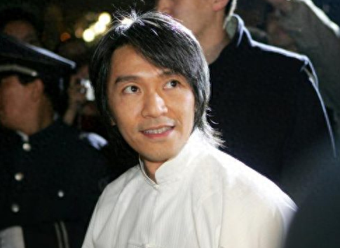
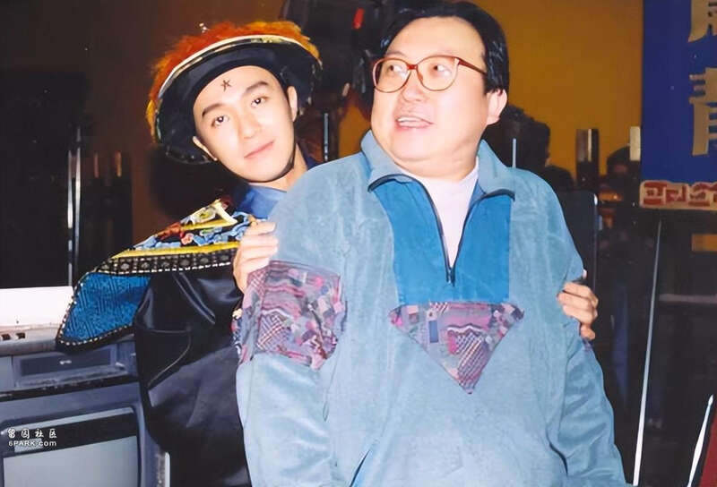
王晶最近开设个人频道，开篇就拿周星驰说事，上一集曝光和周星驰的相识，以及周星驰割双眼皮的秘闻，现在更曝猛料，指周星驰对待他、吴孟达、张家辉都不咋地。
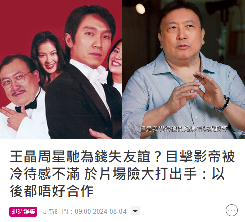
王晶事先表示很欣赏周星驰的才华，但发现周星驰逐渐自我，所有事都想主导，甚至在片场对他呼来喝去，导致王晶开始产生反感。
1992年拍摄《鹿鼎记2》时，王晶就不满周星驰的态度，但一再忍让。
两人过后计划拍摄《少年李小龙》，因为周星驰是李小龙的影迷，对此颇有兴趣，提出了很多想法都被接纳，而嘉禾公司愿意支付800万，王晶表示自己拿40%，剩下的给周星驰，两人一拍即合但很快就反转了，周星驰两度改变主意，要求自己拿70%，后来又要80%。
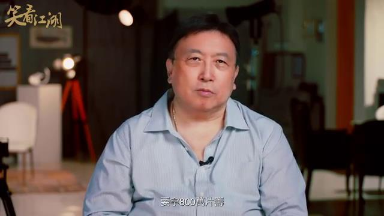
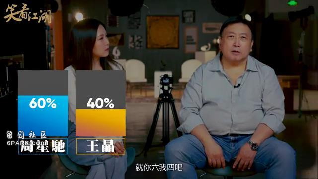
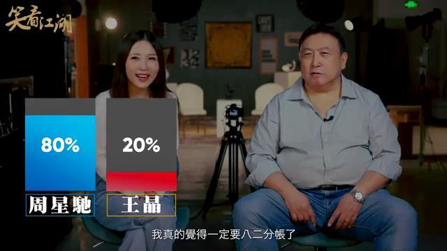
王晶一再迁就，最后答应二八分红，还问周星驰“如果我不答应，你就不拍吗？”
周星驰给予肯定的答复，王晶也只好自己吃亏，说下不为例。
但事后周星驰向公司表示不想拍《少年李小龙》，800万全部给他拍一部戏，继而衍生《武状元苏乞儿》。
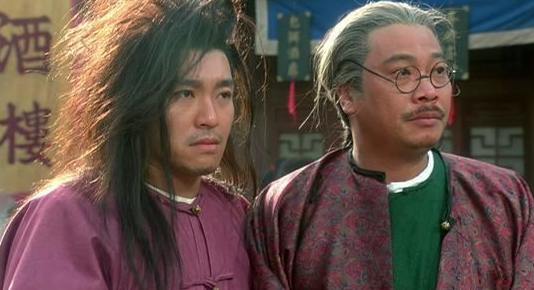
此事过后，两人仍是朋友，但王晶看透了周星驰，认为周星驰把金钱看得比朋友还重要，而自己会分清楚朋友和钱的关系。
王晶还爆料，周星驰当年和吴孟达合作在天津卖传呼机，结果生意失败，他因此怪罪吴孟达，导致二人关系变差，从好友变成普通朋友。
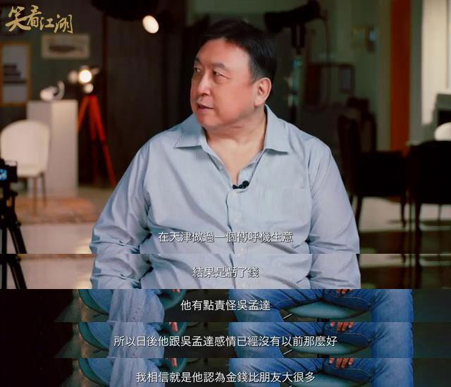
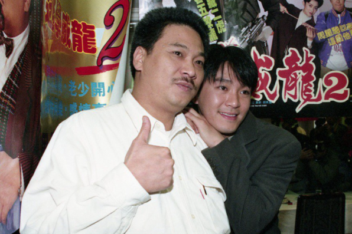
王晶认为周星驰一直想神化自己，不想被身边人看穿，只不过王晶比较通透，看懂周星驰的为人处世，令周星驰对他有些怕，后来拍摄《唐伯虎点秋香》，王晶没有档期，陈嘉上导演又不想和周星驰合作，最终找李力持导演。
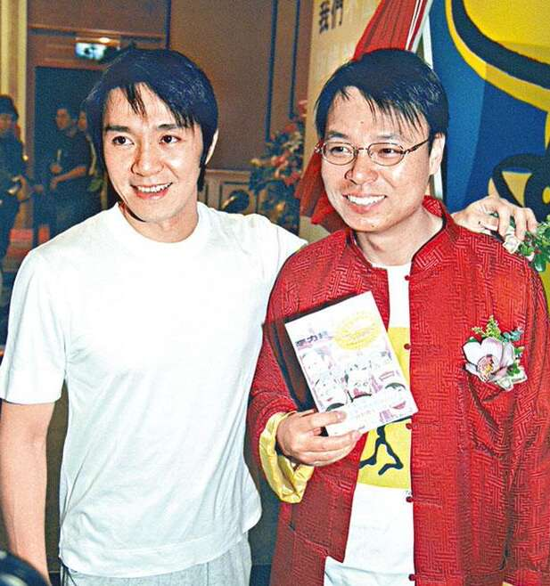
王晶认为李力持只是工具人，真正的导演是周星驰本人，不过这部戏反而让王晶看到周星驰的天赋，称赞他很牛X，觉得周星驰不应该只拿一座金像奖影帝。
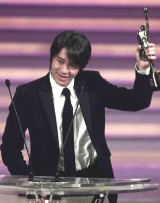
两人最终反目是在2000年拍摄《千王之王2000》，王晶当时是希望让周星驰捧红张家辉，开价1000万，只要周星驰拍7天戏，其实只有6天的戏份，最后一天是想戏弄周星驰。
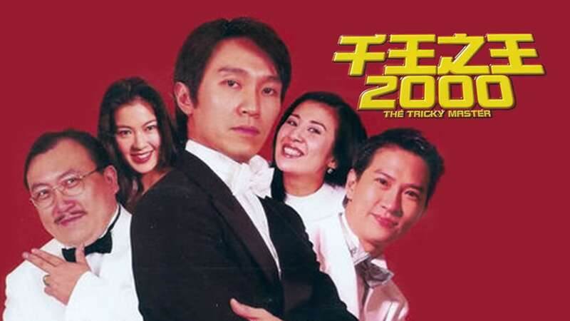
王晶说拍到第七天的时候，周星驰特别不配合，对张家辉爱答不理，王晶怒火中烧当场发飙，怒骂周星驰：“周先生，我们也算朋友，你为什么要这样?我告诉你，6天就拍完你的戏了，今天的戏不重要，你想做就做，不想做就走人，以后不会再合作了。”
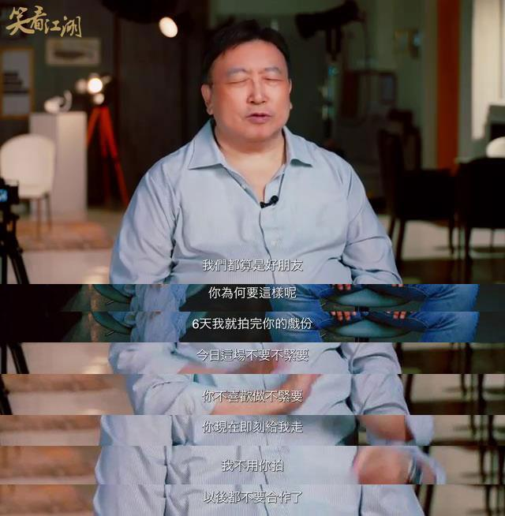
王晶说在场的人都被吓到了，周星驰没有回答，而是直接换了衣服走人，此后二十多年没有再联系，而在片场时，周星驰对张家辉的态度冷淡，基本没什么交流，也导致张家辉失去兴趣。
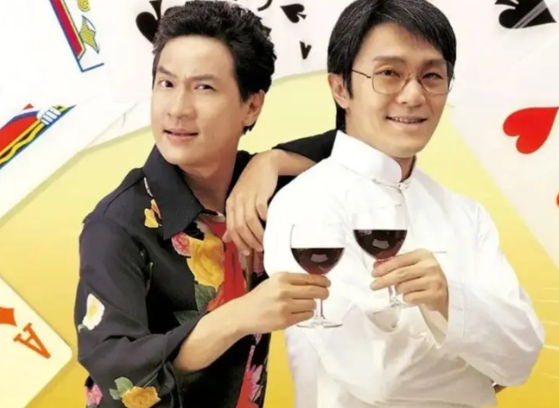
尽管两人不再是朋友，但王晶欣赏周星驰的才华，他可能不会在演戏，但希望周星驰的导演作品可以更上一层楼。
其实从星爷被王晶戏弄、辱骂至今都没有回击，也说明他的人品不赖，其中曲折也只有当事人清楚。